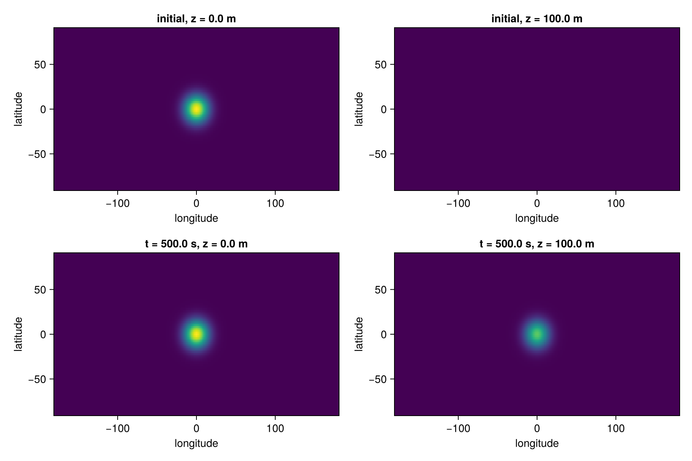

Tutorial: Three dimensions on the cubed sphere
This tutorial is available as a Jupyter notebook.
This tutorial builds an extruded cubed-sphere space, the configuration of a global model: spectral elements in the horizontal and staggered finite differences in the vertical. It solves diffusion on the spherical shell with the horizontal part explicit and the vertical part implicit, assembling the vertical Jacobian with MatrixFields, and it remaps the result to a latitude–longitude grid for plotting. The same script runs on a GPU when CLIMACOMMS_DEVICE=CUDA is set.
using ClimaComms
ClimaComms.@import_required_backends
using LinearAlgebra
import ClimaCore
import ClimaCore:
Domains, Meshes, Topologies, Quadratures, Spaces, Fields, Geometry, Operators, Remapping
import ClimaCore.MatrixFields
import ClimaCore.MatrixFields: @name, ⋅
import ClimaTimeSteppers as CTS
using CairoMakie
CairoMakie.activate!(type = "png")1. The extruded space
The horizontal grid is an equiangular cubed sphere with 10 × 10 elements per panel and cubic polynomials; the vertical grid has 10 cells over 1 km. The extruded space is their product, with the state on cell faces here.
FT = Float64
radius = FT(6000e3)
height = FT(1000)
vert_domain = Domains.IntervalDomain(
Geometry.ZPoint(zero(FT)),
Geometry.ZPoint(height);
boundary_names = (:bottom, :top),
)
vert_mesh = Meshes.IntervalMesh(vert_domain; nelems = 10)
device = ClimaComms.device()
vert_space = Spaces.FaceFiniteDifferenceSpace(device, vert_mesh)
horz_domain = Domains.SphereDomain(radius)
horz_mesh = Meshes.EquiangularCubedSphere(horz_domain, 10)
horz_topology = Topologies.Topology2D(ClimaComms.context(device), horz_mesh)
horz_space = Spaces.SpectralElementSpace2D(horz_topology, Quadratures.GLL{4}())
space = Spaces.ExtrudedFiniteDifferenceSpace(horz_space, vert_space)FaceExtrudedFiniteDifferenceSpace:
context: SingletonCommsContext using CPUSingleThreadedSingletonCommsContext using CPUSingleThreaded
horizontal:
mesh: 10×10×6-element EquiangularCubedSphere of SphereDomain: radius = 6.0e6
node_horizontal_length_scale: 289440.5018233071
element_horizontal_length_scale: 868321.5054699213
quadrature: 4-point Gauss-Legendre-Lobatto quadrature
vertical:
mesh: 10-element IntervalMesh of IntervalDomain: z ∈ [0.0,1000.0] (:bottom, :top)The convenience constructor CommonSpaces.ExtrudedCubedSphereSpace builds the same space in one call; the long form above shows the pieces.
2. The initial state
A Gaussian bump in latitude and longitude on the lowest face, packed into a FieldVector, the state container a time stepper advances. The integrator advances this object in place, so a copy of the initial field is kept for comparison.
(; lat, long, z) = Fields.coordinate_field(space)
σ = FT(15)
φ₀ = @. exp(-(lat^2 + long^2) / σ^2) * (z < 5)
Y₀ = Fields.FieldVector(; φ = copy(φ₀))
φ_start = copy(φ₀)Float64-valued Field:
[4.90908e-7, 0.0, 0.0, 0.0, 0.0, 0.0, 0.0, 0.0, 0.0, 0.0 … 0.0, 0.0, 0.0, 0.0, 0.0, 0.0, 0.0, 0.0, 0.0, 0.0]3. Explicit horizontal and implicit vertical tendencies
Diffusion ∂ₜφ = κ ∇²φ is split. The horizontal Laplacian is a weak divergence of a strong gradient, completed by DSS; it is treated explicitly. With κ = 100 m² s⁻¹ and 500 s of integration, the diffusion length √(κ t) ≈ 220 m spans two vertical cells and a negligible fraction of a horizontal element, so the run shows the vertical spreading; the horizontal operators are exercised but have little to do.
κ = FT(100)
wdiv = Operators.Divergence{Operators.WeakForm}()
grad = Operators.Gradient()
function T_exp!(∂ₜY, Y, _, _)
@. ∂ₜY.φ = κ * wdiv(grad(Y.φ))
return nothing
endT_exp! (generic function with 1 method)The vertical Laplacian couples neighboring levels through a face-to-center gradient and a center-to-face divergence. SetDivergence(0) at the two boundary faces fixes the tendency there at zero, so the boundary values are held: the surface bump acts as a source for the levels above. The vertical part is stiff and is the implicit part.
divᵥ = Operators.DivergenceC2F(;
bottom = Operators.SetDivergence(zero(FT)),
top = Operators.SetDivergence(zero(FT)),
)
gradᵥ = Operators.GradientF2C()
function T_imp!(∂ₜY, Y, _, _)
@. ∂ₜY.φ = κ * divᵥ(gradᵥ(Y.φ))
return nothing
endT_imp! (generic function with 1 method)4. The Jacobian as a matrix field
The implicit solve needs W = Δt γ ∂T_imp/∂Y − I in every column. Each finite-difference operator has a banded matrix representation, MatrixFields.operator_matrix, and products of those matrices are banded matrices too; the tridiagonal product below is stored as a field of TridiagonalMatrixRows, one row per node, and solved column by column.
jacobian = MatrixFields.FieldMatrix(
(@name(φ), @name(φ)) =>
similar(φ₀, MatrixFields.TridiagonalMatrixRow{FT}),
)
divᵥ_matrix = MatrixFields.operator_matrix(divᵥ)
gradᵥ_matrix = MatrixFields.operator_matrix(gradᵥ)
function Wfact(W, Y, p, dtγ, t)
@. W.matrix[@name(φ), @name(φ)] =
dtγ * κ * divᵥ_matrix() ⋅ gradᵥ_matrix() - (LinearAlgebra.I,)
return nothing
end
T_imp = CTS.ODEFunction(
T_imp!;
jac_prototype = MatrixFields.FieldMatrixWithSolver(jacobian, Y₀),
Wfact,
)ClimaTimeSteppers.ODEFunction{typeof(Main.T_imp!), ClimaCore.MatrixFields.FieldMatrixWithSolver{ClimaCore.MatrixFields.FieldMatrix{ClimaCore.MatrixFields.FieldMatrixKeys{Tuple{Tuple{ClimaCore.MatrixFields.FieldName{(:φ,)}, ClimaCore.MatrixFields.FieldName{(:φ,)}}}, Nothing}, Tuple{ClimaCore.Fields.Field{ClimaCore.DataLayouts.VIJFH{ClimaCore.MatrixFields.TridiagonalMatrixRow{Float64}, 11, 4, 4, nothing, ClimaCore.DataLayouts.ThisThreadPool, Array{Float64, 5}}, ClimaCore.Spaces.ExtrudedFiniteDifferenceSpace{ClimaCore.Grids.ExtrudedFiniteDifferenceGrid{ClimaCore.Grids.SpectralElementGrid2D{ClimaCore.Topologies.Topology2D{ClimaComms.SingletonCommsContext{ClimaComms.CPUSingleThreaded}, ClimaCore.Meshes.EquiangularCubedSphere{ClimaCore.Domains.SphereDomain{Float64}, ClimaCore.Meshes.NormalizedBilinearMap}, CartesianIndices{3, Tuple{Base.OneTo{Int64}, Base.OneTo{Int64}, Base.OneTo{Int64}}}, LinearIndices{3, Tuple{Base.OneTo{Int64}, Base.OneTo{Int64}, Base.OneTo{Int64}}}, Vector{Tuple{Int64, Int64, Int64, Int64, Bool}}, Vector{Tuple{Int64, Int64, Int64, Int64, Bool}}, Vector{Tuple{Int64, Int64}}, Vector{Int64}, Vector{Tuple{Bool, Int64, Int64}}, Vector{Int64}, Vector{Int64}, @NamedTuple{}, Vector{Tuple{Int64, Int64}}}, ClimaCore.Quadratures.GLL{4}, ClimaCore.Geometry.SphericalGlobalGeometry{Float64}, ClimaCore.DataLayouts.VIJHWithF{ClimaCore.Geometry.LocalGeometry{(1, 2), ClimaCore.Geometry.LatLongPoint{Float64}, Float64, ClimaCore.Geometry.Tensor{2, Float64, Tuple{ClimaCore.Geometry.Components{ClimaCore.Geometry.Orthonormal, (1, 2, 3)}, ClimaCore.Geometry.Components{ClimaCore.Geometry.Covariant, (1, 2, 3)}}, StaticArraysCore.SMatrix{3, 3, Float64, 9}}, ClimaCore.Geometry.Tensor{2, Float64, Tuple{ClimaCore.Geometry.Components{ClimaCore.Geometry.Contravariant, (1, 2, 3)}, ClimaCore.Geometry.Components{ClimaCore.Geometry.Contravariant, (1, 2, 3)}}, StaticArraysCore.SMatrix{3, 3, Float64, 9}}}, 1, 4, 4, nothing, 4, ClimaCore.DataLayouts.ThisThreadPool, Array{Float64, 5}}, ClimaCore.DataLayouts.VIJHWithF{Float64, 1, 4, 4, nothing, 4, ClimaCore.DataLayouts.ThisThreadPool, Array{Float64, 5}}, ClimaCore.DataLayouts.VIJFH{ClimaCore.Geometry.SurfaceGeometry{Float64, ClimaCore.Geometry.UVVector{Float64}}, 1, 4, 1, nothing, ClimaCore.DataLayouts.ThisThreadPool, Array{Float64, 5}}, @NamedTuple{}, ClimaCore.DataLayouts.NoMask, ClimaCore.Grids.CG}, ClimaCore.Grids.FiniteDifferenceGrid{ClimaCore.Topologies.IntervalTopology{ClimaComms.SingletonCommsContext{ClimaComms.CPUSingleThreaded}, ClimaCore.Meshes.IntervalMesh{ClimaCore.Meshes.Uniform, ClimaCore.Domains.IntervalDomain{ClimaCore.Geometry.ZPoint{Float64}, Tuple{Symbol, Symbol}}, LinRange{ClimaCore.Geometry.ZPoint{Float64}, Int64}, Nothing}, @NamedTuple{bottom::Int64, top::Int64}}, ClimaCore.Geometry.CartesianGlobalGeometry, ClimaCore.DataLayouts.VIJFH{ClimaCore.Geometry.LocalGeometry{(3,), ClimaCore.Geometry.ZPoint{Float64}, Float64, ClimaCore.Geometry.Tensor{2, Float64, Tuple{ClimaCore.Geometry.Components{ClimaCore.Geometry.Orthonormal, (1, 2, 3)}, ClimaCore.Geometry.Components{ClimaCore.Geometry.Covariant, (1, 2, 3)}}, StaticArraysCore.SMatrix{3, 3, Float64, 9}}, ClimaCore.Geometry.Tensor{2, Float64, Tuple{ClimaCore.Geometry.Components{ClimaCore.Geometry.Contravariant, (1, 2, 3)}, ClimaCore.Geometry.Components{ClimaCore.Geometry.Contravariant, (1, 2, 3)}}, StaticArraysCore.SMatrix{3, 3, Float64, 9}}}, 10, 1, 1, 1, ClimaCore.DataLayouts.ThisThreadPool, Array{Float64, 5}}, ClimaCore.DataLayouts.VIJFH{ClimaCore.Geometry.LocalGeometry{(3,), ClimaCore.Geometry.ZPoint{Float64}, Float64, ClimaCore.Geometry.Tensor{2, Float64, Tuple{ClimaCore.Geometry.Components{ClimaCore.Geometry.Orthonormal, (1, 2, 3)}, ClimaCore.Geometry.Components{ClimaCore.Geometry.Covariant, (1, 2, 3)}}, StaticArraysCore.SMatrix{3, 3, Float64, 9}}, ClimaCore.Geometry.Tensor{2, Float64, Tuple{ClimaCore.Geometry.Components{ClimaCore.Geometry.Contravariant, (1, 2, 3)}, ClimaCore.Geometry.Components{ClimaCore.Geometry.Contravariant, (1, 2, 3)}}, StaticArraysCore.SMatrix{3, 3, Float64, 9}}}, 11, 1, 1, 1, ClimaCore.DataLayouts.ThisThreadPool, Array{Float64, 5}}}, ClimaCore.Grids.Flat, ClimaCore.Geometry.ShallowSphericalGlobalGeometry{Float64}, ClimaCore.DataLayouts.VIJFH{ClimaCore.Geometry.LocalGeometry{(1, 2, 3), ClimaCore.Geometry.LatLongZPoint{Float64}, Float64, ClimaCore.Geometry.Tensor{2, Float64, Tuple{ClimaCore.Geometry.Components{ClimaCore.Geometry.Orthonormal, (1, 2, 3)}, ClimaCore.Geometry.Components{ClimaCore.Geometry.Covariant, (1, 2, 3)}}, StaticArraysCore.SMatrix{3, 3, Float64, 9}}, ClimaCore.Geometry.Tensor{2, Float64, Tuple{ClimaCore.Geometry.Components{ClimaCore.Geometry.Contravariant, (1, 2, 3)}, ClimaCore.Geometry.Components{ClimaCore.Geometry.Contravariant, (1, 2, 3)}}, StaticArraysCore.SMatrix{3, 3, Float64, 9}}}, 10, 4, 4, nothing, ClimaCore.DataLayouts.ThisThreadPool, Array{Float64, 5}}, ClimaCore.DataLayouts.VIJFH{ClimaCore.Geometry.LocalGeometry{(1, 2, 3), ClimaCore.Geometry.LatLongZPoint{Float64}, Float64, ClimaCore.Geometry.Tensor{2, Float64, Tuple{ClimaCore.Geometry.Components{ClimaCore.Geometry.Orthonormal, (1, 2, 3)}, ClimaCore.Geometry.Components{ClimaCore.Geometry.Covariant, (1, 2, 3)}}, StaticArraysCore.SMatrix{3, 3, Float64, 9}}, ClimaCore.Geometry.Tensor{2, Float64, Tuple{ClimaCore.Geometry.Components{ClimaCore.Geometry.Contravariant, (1, 2, 3)}, ClimaCore.Geometry.Components{ClimaCore.Geometry.Contravariant, (1, 2, 3)}}, StaticArraysCore.SMatrix{3, 3, Float64, 9}}}, 11, 4, 4, nothing, ClimaCore.DataLayouts.ThisThreadPool, Array{Float64, 5}}}, ClimaCore.Grids.CellFace}}}}, ClimaCore.MatrixFields.FieldMatrixSolver{ClimaCore.MatrixFields.BlockDiagonalSolve, ClimaCore.MatrixFields.FieldVectorView{ClimaCore.MatrixFields.FieldVectorKeys{Tuple{ClimaCore.MatrixFields.FieldName{(:φ,)}}, ClimaCore.MatrixFields.FieldNameTreeNode{ClimaCore.MatrixFields.FieldName{()}, Tuple{ClimaCore.MatrixFields.FieldNameTreeLeaf{ClimaCore.MatrixFields.FieldName{(:φ,)}}}}}, Tuple{ClimaCore.Fields.Field{ClimaCore.DataLayouts.VIJFH{Tuple{Float64, Float64}, 11, 4, 4, nothing, ClimaCore.DataLayouts.ThisThreadPool, Array{Float64, 5}}, ClimaCore.Spaces.ExtrudedFiniteDifferenceSpace{ClimaCore.Grids.ExtrudedFiniteDifferenceGrid{ClimaCore.Grids.SpectralElementGrid2D{ClimaCore.Topologies.Topology2D{ClimaComms.SingletonCommsContext{ClimaComms.CPUSingleThreaded}, ClimaCore.Meshes.EquiangularCubedSphere{ClimaCore.Domains.SphereDomain{Float64}, ClimaCore.Meshes.NormalizedBilinearMap}, CartesianIndices{3, Tuple{Base.OneTo{Int64}, Base.OneTo{Int64}, Base.OneTo{Int64}}}, LinearIndices{3, Tuple{Base.OneTo{Int64}, Base.OneTo{Int64}, Base.OneTo{Int64}}}, Vector{Tuple{Int64, Int64, Int64, Int64, Bool}}, Vector{Tuple{Int64, Int64, Int64, Int64, Bool}}, Vector{Tuple{Int64, Int64}}, Vector{Int64}, Vector{Tuple{Bool, Int64, Int64}}, Vector{Int64}, Vector{Int64}, @NamedTuple{}, Vector{Tuple{Int64, Int64}}}, ClimaCore.Quadratures.GLL{4}, ClimaCore.Geometry.SphericalGlobalGeometry{Float64}, ClimaCore.DataLayouts.VIJHWithF{ClimaCore.Geometry.LocalGeometry{(1, 2), ClimaCore.Geometry.LatLongPoint{Float64}, Float64, ClimaCore.Geometry.Tensor{2, Float64, Tuple{ClimaCore.Geometry.Components{ClimaCore.Geometry.Orthonormal, (1, 2, 3)}, ClimaCore.Geometry.Components{ClimaCore.Geometry.Covariant, (1, 2, 3)}}, StaticArraysCore.SMatrix{3, 3, Float64, 9}}, ClimaCore.Geometry.Tensor{2, Float64, Tuple{ClimaCore.Geometry.Components{ClimaCore.Geometry.Contravariant, (1, 2, 3)}, ClimaCore.Geometry.Components{ClimaCore.Geometry.Contravariant, (1, 2, 3)}}, StaticArraysCore.SMatrix{3, 3, Float64, 9}}}, 1, 4, 4, nothing, 4, ClimaCore.DataLayouts.ThisThreadPool, Array{Float64, 5}}, ClimaCore.DataLayouts.VIJHWithF{Float64, 1, 4, 4, nothing, 4, ClimaCore.DataLayouts.ThisThreadPool, Array{Float64, 5}}, ClimaCore.DataLayouts.VIJFH{ClimaCore.Geometry.SurfaceGeometry{Float64, ClimaCore.Geometry.UVVector{Float64}}, 1, 4, 1, nothing, ClimaCore.DataLayouts.ThisThreadPool, Array{Float64, 5}}, @NamedTuple{}, ClimaCore.DataLayouts.NoMask, ClimaCore.Grids.CG}, ClimaCore.Grids.FiniteDifferenceGrid{ClimaCore.Topologies.IntervalTopology{ClimaComms.SingletonCommsContext{ClimaComms.CPUSingleThreaded}, ClimaCore.Meshes.IntervalMesh{ClimaCore.Meshes.Uniform, ClimaCore.Domains.IntervalDomain{ClimaCore.Geometry.ZPoint{Float64}, Tuple{Symbol, Symbol}}, LinRange{ClimaCore.Geometry.ZPoint{Float64}, Int64}, Nothing}, @NamedTuple{bottom::Int64, top::Int64}}, ClimaCore.Geometry.CartesianGlobalGeometry, ClimaCore.DataLayouts.VIJFH{ClimaCore.Geometry.LocalGeometry{(3,), ClimaCore.Geometry.ZPoint{Float64}, Float64, ClimaCore.Geometry.Tensor{2, Float64, Tuple{ClimaCore.Geometry.Components{ClimaCore.Geometry.Orthonormal, (1, 2, 3)}, ClimaCore.Geometry.Components{ClimaCore.Geometry.Covariant, (1, 2, 3)}}, StaticArraysCore.SMatrix{3, 3, Float64, 9}}, ClimaCore.Geometry.Tensor{2, Float64, Tuple{ClimaCore.Geometry.Components{ClimaCore.Geometry.Contravariant, (1, 2, 3)}, ClimaCore.Geometry.Components{ClimaCore.Geometry.Contravariant, (1, 2, 3)}}, StaticArraysCore.SMatrix{3, 3, Float64, 9}}}, 10, 1, 1, 1, ClimaCore.DataLayouts.ThisThreadPool, Array{Float64, 5}}, ClimaCore.DataLayouts.VIJFH{ClimaCore.Geometry.LocalGeometry{(3,), ClimaCore.Geometry.ZPoint{Float64}, Float64, ClimaCore.Geometry.Tensor{2, Float64, Tuple{ClimaCore.Geometry.Components{ClimaCore.Geometry.Orthonormal, (1, 2, 3)}, ClimaCore.Geometry.Components{ClimaCore.Geometry.Covariant, (1, 2, 3)}}, StaticArraysCore.SMatrix{3, 3, Float64, 9}}, ClimaCore.Geometry.Tensor{2, Float64, Tuple{ClimaCore.Geometry.Components{ClimaCore.Geometry.Contravariant, (1, 2, 3)}, ClimaCore.Geometry.Components{ClimaCore.Geometry.Contravariant, (1, 2, 3)}}, StaticArraysCore.SMatrix{3, 3, Float64, 9}}}, 11, 1, 1, 1, ClimaCore.DataLayouts.ThisThreadPool, Array{Float64, 5}}}, ClimaCore.Grids.Flat, ClimaCore.Geometry.ShallowSphericalGlobalGeometry{Float64}, ClimaCore.DataLayouts.VIJFH{ClimaCore.Geometry.LocalGeometry{(1, 2, 3), ClimaCore.Geometry.LatLongZPoint{Float64}, Float64, ClimaCore.Geometry.Tensor{2, Float64, Tuple{ClimaCore.Geometry.Components{ClimaCore.Geometry.Orthonormal, (1, 2, 3)}, ClimaCore.Geometry.Components{ClimaCore.Geometry.Covariant, (1, 2, 3)}}, StaticArraysCore.SMatrix{3, 3, Float64, 9}}, ClimaCore.Geometry.Tensor{2, Float64, Tuple{ClimaCore.Geometry.Components{ClimaCore.Geometry.Contravariant, (1, 2, 3)}, ClimaCore.Geometry.Components{ClimaCore.Geometry.Contravariant, (1, 2, 3)}}, StaticArraysCore.SMatrix{3, 3, Float64, 9}}}, 10, 4, 4, nothing, ClimaCore.DataLayouts.ThisThreadPool, Array{Float64, 5}}, ClimaCore.DataLayouts.VIJFH{ClimaCore.Geometry.LocalGeometry{(1, 2, 3), ClimaCore.Geometry.LatLongZPoint{Float64}, Float64, ClimaCore.Geometry.Tensor{2, Float64, Tuple{ClimaCore.Geometry.Components{ClimaCore.Geometry.Orthonormal, (1, 2, 3)}, ClimaCore.Geometry.Components{ClimaCore.Geometry.Covariant, (1, 2, 3)}}, StaticArraysCore.SMatrix{3, 3, Float64, 9}}, ClimaCore.Geometry.Tensor{2, Float64, Tuple{ClimaCore.Geometry.Components{ClimaCore.Geometry.Contravariant, (1, 2, 3)}, ClimaCore.Geometry.Components{ClimaCore.Geometry.Contravariant, (1, 2, 3)}}, StaticArraysCore.SMatrix{3, 3, Float64, 9}}}, 11, 4, 4, nothing, ClimaCore.DataLayouts.ThisThreadPool, Array{Float64, 5}}}, ClimaCore.Grids.CellFace}}}}}}, typeof(Main.Wfact), Nothing}(Main.T_imp!, ClimaCore.MatrixFields.FieldMatrixWithSolver{ClimaCore.MatrixFields.FieldMatrix{ClimaCore.MatrixFields.FieldMatrixKeys{Tuple{Tuple{ClimaCore.MatrixFields.FieldName{(:φ,)}, ClimaCore.MatrixFields.FieldName{(:φ,)}}}, Nothing}, Tuple{ClimaCore.Fields.Field{ClimaCore.DataLayouts.VIJFH{ClimaCore.MatrixFields.TridiagonalMatrixRow{Float64}, 11, 4, 4, nothing, ClimaCore.DataLayouts.ThisThreadPool, Array{Float64, 5}}, ClimaCore.Spaces.ExtrudedFiniteDifferenceSpace{ClimaCore.Grids.ExtrudedFiniteDifferenceGrid{ClimaCore.Grids.SpectralElementGrid2D{ClimaCore.Topologies.Topology2D{ClimaComms.SingletonCommsContext{ClimaComms.CPUSingleThreaded}, ClimaCore.Meshes.EquiangularCubedSphere{ClimaCore.Domains.SphereDomain{Float64}, ClimaCore.Meshes.NormalizedBilinearMap}, CartesianIndices{3, Tuple{Base.OneTo{Int64}, Base.OneTo{Int64}, Base.OneTo{Int64}}}, LinearIndices{3, Tuple{Base.OneTo{Int64}, Base.OneTo{Int64}, Base.OneTo{Int64}}}, Vector{Tuple{Int64, Int64, Int64, Int64, Bool}}, Vector{Tuple{Int64, Int64, Int64, Int64, Bool}}, Vector{Tuple{Int64, Int64}}, Vector{Int64}, Vector{Tuple{Bool, Int64, Int64}}, Vector{Int64}, Vector{Int64}, @NamedTuple{}, Vector{Tuple{Int64, Int64}}}, ClimaCore.Quadratures.GLL{4}, ClimaCore.Geometry.SphericalGlobalGeometry{Float64}, ClimaCore.DataLayouts.VIJHWithF{ClimaCore.Geometry.LocalGeometry{(1, 2), ClimaCore.Geometry.LatLongPoint{Float64}, Float64, ClimaCore.Geometry.Tensor{2, Float64, Tuple{ClimaCore.Geometry.Components{ClimaCore.Geometry.Orthonormal, (1, 2, 3)}, ClimaCore.Geometry.Components{ClimaCore.Geometry.Covariant, (1, 2, 3)}}, StaticArraysCore.SMatrix{3, 3, Float64, 9}}, ClimaCore.Geometry.Tensor{2, Float64, Tuple{ClimaCore.Geometry.Components{ClimaCore.Geometry.Contravariant, (1, 2, 3)}, ClimaCore.Geometry.Components{ClimaCore.Geometry.Contravariant, (1, 2, 3)}}, StaticArraysCore.SMatrix{3, 3, Float64, 9}}}, 1, 4, 4, nothing, 4, ClimaCore.DataLayouts.ThisThreadPool, Array{Float64, 5}}, ClimaCore.DataLayouts.VIJHWithF{Float64, 1, 4, 4, nothing, 4, ClimaCore.DataLayouts.ThisThreadPool, Array{Float64, 5}}, ClimaCore.DataLayouts.VIJFH{ClimaCore.Geometry.SurfaceGeometry{Float64, ClimaCore.Geometry.UVVector{Float64}}, 1, 4, 1, nothing, ClimaCore.DataLayouts.ThisThreadPool, Array{Float64, 5}}, @NamedTuple{}, ClimaCore.DataLayouts.NoMask, ClimaCore.Grids.CG}, ClimaCore.Grids.FiniteDifferenceGrid{ClimaCore.Topologies.IntervalTopology{ClimaComms.SingletonCommsContext{ClimaComms.CPUSingleThreaded}, ClimaCore.Meshes.IntervalMesh{ClimaCore.Meshes.Uniform, ClimaCore.Domains.IntervalDomain{ClimaCore.Geometry.ZPoint{Float64}, Tuple{Symbol, Symbol}}, LinRange{ClimaCore.Geometry.ZPoint{Float64}, Int64}, Nothing}, @NamedTuple{bottom::Int64, top::Int64}}, ClimaCore.Geometry.CartesianGlobalGeometry, ClimaCore.DataLayouts.VIJFH{ClimaCore.Geometry.LocalGeometry{(3,), ClimaCore.Geometry.ZPoint{Float64}, Float64, ClimaCore.Geometry.Tensor{2, Float64, Tuple{ClimaCore.Geometry.Components{ClimaCore.Geometry.Orthonormal, (1, 2, 3)}, ClimaCore.Geometry.Components{ClimaCore.Geometry.Covariant, (1, 2, 3)}}, StaticArraysCore.SMatrix{3, 3, Float64, 9}}, ClimaCore.Geometry.Tensor{2, Float64, Tuple{ClimaCore.Geometry.Components{ClimaCore.Geometry.Contravariant, (1, 2, 3)}, ClimaCore.Geometry.Components{ClimaCore.Geometry.Contravariant, (1, 2, 3)}}, StaticArraysCore.SMatrix{3, 3, Float64, 9}}}, 10, 1, 1, 1, ClimaCore.DataLayouts.ThisThreadPool, Array{Float64, 5}}, ClimaCore.DataLayouts.VIJFH{ClimaCore.Geometry.LocalGeometry{(3,), ClimaCore.Geometry.ZPoint{Float64}, Float64, ClimaCore.Geometry.Tensor{2, Float64, Tuple{ClimaCore.Geometry.Components{ClimaCore.Geometry.Orthonormal, (1, 2, 3)}, ClimaCore.Geometry.Components{ClimaCore.Geometry.Covariant, (1, 2, 3)}}, StaticArraysCore.SMatrix{3, 3, Float64, 9}}, ClimaCore.Geometry.Tensor{2, Float64, Tuple{ClimaCore.Geometry.Components{ClimaCore.Geometry.Contravariant, (1, 2, 3)}, ClimaCore.Geometry.Components{ClimaCore.Geometry.Contravariant, (1, 2, 3)}}, StaticArraysCore.SMatrix{3, 3, Float64, 9}}}, 11, 1, 1, 1, ClimaCore.DataLayouts.ThisThreadPool, Array{Float64, 5}}}, ClimaCore.Grids.Flat, ClimaCore.Geometry.ShallowSphericalGlobalGeometry{Float64}, ClimaCore.DataLayouts.VIJFH{ClimaCore.Geometry.LocalGeometry{(1, 2, 3), ClimaCore.Geometry.LatLongZPoint{Float64}, Float64, ClimaCore.Geometry.Tensor{2, Float64, Tuple{ClimaCore.Geometry.Components{ClimaCore.Geometry.Orthonormal, (1, 2, 3)}, ClimaCore.Geometry.Components{ClimaCore.Geometry.Covariant, (1, 2, 3)}}, StaticArraysCore.SMatrix{3, 3, Float64, 9}}, ClimaCore.Geometry.Tensor{2, Float64, Tuple{ClimaCore.Geometry.Components{ClimaCore.Geometry.Contravariant, (1, 2, 3)}, ClimaCore.Geometry.Components{ClimaCore.Geometry.Contravariant, (1, 2, 3)}}, StaticArraysCore.SMatrix{3, 3, Float64, 9}}}, 10, 4, 4, nothing, ClimaCore.DataLayouts.ThisThreadPool, Array{Float64, 5}}, ClimaCore.DataLayouts.VIJFH{ClimaCore.Geometry.LocalGeometry{(1, 2, 3), ClimaCore.Geometry.LatLongZPoint{Float64}, Float64, ClimaCore.Geometry.Tensor{2, Float64, Tuple{ClimaCore.Geometry.Components{ClimaCore.Geometry.Orthonormal, (1, 2, 3)}, ClimaCore.Geometry.Components{ClimaCore.Geometry.Covariant, (1, 2, 3)}}, StaticArraysCore.SMatrix{3, 3, Float64, 9}}, ClimaCore.Geometry.Tensor{2, Float64, Tuple{ClimaCore.Geometry.Components{ClimaCore.Geometry.Contravariant, (1, 2, 3)}, ClimaCore.Geometry.Components{ClimaCore.Geometry.Contravariant, (1, 2, 3)}}, StaticArraysCore.SMatrix{3, 3, Float64, 9}}}, 11, 4, 4, nothing, ClimaCore.DataLayouts.ThisThreadPool, Array{Float64, 5}}}, ClimaCore.Grids.CellFace}}}}, ClimaCore.MatrixFields.FieldMatrixSolver{ClimaCore.MatrixFields.BlockDiagonalSolve, ClimaCore.MatrixFields.FieldVectorView{ClimaCore.MatrixFields.FieldVectorKeys{Tuple{ClimaCore.MatrixFields.FieldName{(:φ,)}}, ClimaCore.MatrixFields.FieldNameTreeNode{ClimaCore.MatrixFields.FieldName{()}, Tuple{ClimaCore.MatrixFields.FieldNameTreeLeaf{ClimaCore.MatrixFields.FieldName{(:φ,)}}}}}, Tuple{ClimaCore.Fields.Field{ClimaCore.DataLayouts.VIJFH{Tuple{Float64, Float64}, 11, 4, 4, nothing, ClimaCore.DataLayouts.ThisThreadPool, Array{Float64, 5}}, ClimaCore.Spaces.ExtrudedFiniteDifferenceSpace{ClimaCore.Grids.ExtrudedFiniteDifferenceGrid{ClimaCore.Grids.SpectralElementGrid2D{ClimaCore.Topologies.Topology2D{ClimaComms.SingletonCommsContext{ClimaComms.CPUSingleThreaded}, ClimaCore.Meshes.EquiangularCubedSphere{ClimaCore.Domains.SphereDomain{Float64}, ClimaCore.Meshes.NormalizedBilinearMap}, CartesianIndices{3, Tuple{Base.OneTo{Int64}, Base.OneTo{Int64}, Base.OneTo{Int64}}}, LinearIndices{3, Tuple{Base.OneTo{Int64}, Base.OneTo{Int64}, Base.OneTo{Int64}}}, Vector{Tuple{Int64, Int64, Int64, Int64, Bool}}, Vector{Tuple{Int64, Int64, Int64, Int64, Bool}}, Vector{Tuple{Int64, Int64}}, Vector{Int64}, Vector{Tuple{Bool, Int64, Int64}}, Vector{Int64}, Vector{Int64}, @NamedTuple{}, Vector{Tuple{Int64, Int64}}}, ClimaCore.Quadratures.GLL{4}, ClimaCore.Geometry.SphericalGlobalGeometry{Float64}, ClimaCore.DataLayouts.VIJHWithF{ClimaCore.Geometry.LocalGeometry{(1, 2), ClimaCore.Geometry.LatLongPoint{Float64}, Float64, ClimaCore.Geometry.Tensor{2, Float64, Tuple{ClimaCore.Geometry.Components{ClimaCore.Geometry.Orthonormal, (1, 2, 3)}, ClimaCore.Geometry.Components{ClimaCore.Geometry.Covariant, (1, 2, 3)}}, StaticArraysCore.SMatrix{3, 3, Float64, 9}}, ClimaCore.Geometry.Tensor{2, Float64, Tuple{ClimaCore.Geometry.Components{ClimaCore.Geometry.Contravariant, (1, 2, 3)}, ClimaCore.Geometry.Components{ClimaCore.Geometry.Contravariant, (1, 2, 3)}}, StaticArraysCore.SMatrix{3, 3, Float64, 9}}}, 1, 4, 4, nothing, 4, ClimaCore.DataLayouts.ThisThreadPool, Array{Float64, 5}}, ClimaCore.DataLayouts.VIJHWithF{Float64, 1, 4, 4, nothing, 4, ClimaCore.DataLayouts.ThisThreadPool, Array{Float64, 5}}, ClimaCore.DataLayouts.VIJFH{ClimaCore.Geometry.SurfaceGeometry{Float64, ClimaCore.Geometry.UVVector{Float64}}, 1, 4, 1, nothing, ClimaCore.DataLayouts.ThisThreadPool, Array{Float64, 5}}, @NamedTuple{}, ClimaCore.DataLayouts.NoMask, ClimaCore.Grids.CG}, ClimaCore.Grids.FiniteDifferenceGrid{ClimaCore.Topologies.IntervalTopology{ClimaComms.SingletonCommsContext{ClimaComms.CPUSingleThreaded}, ClimaCore.Meshes.IntervalMesh{ClimaCore.Meshes.Uniform, ClimaCore.Domains.IntervalDomain{ClimaCore.Geometry.ZPoint{Float64}, Tuple{Symbol, Symbol}}, LinRange{ClimaCore.Geometry.ZPoint{Float64}, Int64}, Nothing}, @NamedTuple{bottom::Int64, top::Int64}}, ClimaCore.Geometry.CartesianGlobalGeometry, ClimaCore.DataLayouts.VIJFH{ClimaCore.Geometry.LocalGeometry{(3,), ClimaCore.Geometry.ZPoint{Float64}, Float64, ClimaCore.Geometry.Tensor{2, Float64, Tuple{ClimaCore.Geometry.Components{ClimaCore.Geometry.Orthonormal, (1, 2, 3)}, ClimaCore.Geometry.Components{ClimaCore.Geometry.Covariant, (1, 2, 3)}}, StaticArraysCore.SMatrix{3, 3, Float64, 9}}, ClimaCore.Geometry.Tensor{2, Float64, Tuple{ClimaCore.Geometry.Components{ClimaCore.Geometry.Contravariant, (1, 2, 3)}, ClimaCore.Geometry.Components{ClimaCore.Geometry.Contravariant, (1, 2, 3)}}, StaticArraysCore.SMatrix{3, 3, Float64, 9}}}, 10, 1, 1, 1, ClimaCore.DataLayouts.ThisThreadPool, Array{Float64, 5}}, ClimaCore.DataLayouts.VIJFH{ClimaCore.Geometry.LocalGeometry{(3,), ClimaCore.Geometry.ZPoint{Float64}, Float64, ClimaCore.Geometry.Tensor{2, Float64, Tuple{ClimaCore.Geometry.Components{ClimaCore.Geometry.Orthonormal, (1, 2, 3)}, ClimaCore.Geometry.Components{ClimaCore.Geometry.Covariant, (1, 2, 3)}}, StaticArraysCore.SMatrix{3, 3, Float64, 9}}, ClimaCore.Geometry.Tensor{2, Float64, Tuple{ClimaCore.Geometry.Components{ClimaCore.Geometry.Contravariant, (1, 2, 3)}, ClimaCore.Geometry.Components{ClimaCore.Geometry.Contravariant, (1, 2, 3)}}, StaticArraysCore.SMatrix{3, 3, Float64, 9}}}, 11, 1, 1, 1, ClimaCore.DataLayouts.ThisThreadPool, Array{Float64, 5}}}, ClimaCore.Grids.Flat, ClimaCore.Geometry.ShallowSphericalGlobalGeometry{Float64}, ClimaCore.DataLayouts.VIJFH{ClimaCore.Geometry.LocalGeometry{(1, 2, 3), ClimaCore.Geometry.LatLongZPoint{Float64}, Float64, ClimaCore.Geometry.Tensor{2, Float64, Tuple{ClimaCore.Geometry.Components{ClimaCore.Geometry.Orthonormal, (1, 2, 3)}, ClimaCore.Geometry.Components{ClimaCore.Geometry.Covariant, (1, 2, 3)}}, StaticArraysCore.SMatrix{3, 3, Float64, 9}}, ClimaCore.Geometry.Tensor{2, Float64, Tuple{ClimaCore.Geometry.Components{ClimaCore.Geometry.Contravariant, (1, 2, 3)}, ClimaCore.Geometry.Components{ClimaCore.Geometry.Contravariant, (1, 2, 3)}}, StaticArraysCore.SMatrix{3, 3, Float64, 9}}}, 10, 4, 4, nothing, ClimaCore.DataLayouts.ThisThreadPool, Array{Float64, 5}}, ClimaCore.DataLayouts.VIJFH{ClimaCore.Geometry.LocalGeometry{(1, 2, 3), ClimaCore.Geometry.LatLongZPoint{Float64}, Float64, ClimaCore.Geometry.Tensor{2, Float64, Tuple{ClimaCore.Geometry.Components{ClimaCore.Geometry.Orthonormal, (1, 2, 3)}, ClimaCore.Geometry.Components{ClimaCore.Geometry.Covariant, (1, 2, 3)}}, StaticArraysCore.SMatrix{3, 3, Float64, 9}}, ClimaCore.Geometry.Tensor{2, Float64, Tuple{ClimaCore.Geometry.Components{ClimaCore.Geometry.Contravariant, (1, 2, 3)}, ClimaCore.Geometry.Components{ClimaCore.Geometry.Contravariant, (1, 2, 3)}}, StaticArraysCore.SMatrix{3, 3, Float64, 9}}}, 11, 4, 4, nothing, ClimaCore.DataLayouts.ThisThreadPool, Array{Float64, 5}}}, ClimaCore.Grids.CellFace}}}}}}((@name(φ), @name(φ)) => ClimaCore.MatrixFields.TridiagonalMatrixRow{Float64}-valued Field whose first column corresponds to the Square matrix
6.89951e-310 6.89951e-310 ⋅ … ⋅ ⋅
6.89951e-310 6.89951e-310 6.89951e-310 ⋅ ⋅
⋅ 6.89951e-310 6.89951e-310 ⋅ ⋅
⋅ ⋅ 6.89951e-310 ⋅ ⋅
⋅ ⋅ ⋅ ⋅ ⋅
⋅ ⋅ ⋅ … ⋅ ⋅
⋅ ⋅ ⋅ ⋅ ⋅
⋅ ⋅ ⋅ ⋅ ⋅
⋅ ⋅ ⋅ 6.89951e-310 ⋅
⋅ ⋅ ⋅ 6.89951e-310 6.89951e-310
⋅ ⋅ ⋅ … 6.89951e-310 6.89951e-310), Main.Wfact, nothing)DSS runs as the time stepper's dss! callback, after each stage, so that the state is continuous when the next stage evaluates it.
dss!(Y, p, t) = Spaces.weighted_dss!(Y.φ)dss! (generic function with 1 method)5. Integration
t_end = FT(500)
dt = FT(5)
prob = CTS.ODEProblem(
CTS.ClimaODEFunction(; T_imp! = T_imp, T_exp!, dss!),
Y₀,
(zero(FT), t_end),
nothing,
)
algorithm = CTS.RosenbrockAlgorithm(CTS.tableau(CTS.SSPKnoth()))
integrator = CTS.init(prob, algorithm; dt)
CTS.solve!(integrator)
(initial = extrema(φ_start), final = extrema(integrator.u.φ))(initial = (0.0, 1.0), final = (-3.504805803853691e-22, 0.9999999183582605))6. Remapping to latitude–longitude
Cubed-sphere fields are plotted after interpolation to a regular grid. A Remapper is built once for the space and a set of target coordinates and reused for any field on that space.
longs = range(-180, 180, length = 181)
lats = range(-90, 90, length = 91)
hcoords = [Geometry.LatLongPoint(lat, long) for long in longs, lat in lats]
zcoords = [Geometry.ZPoint(FT(0)), Geometry.ZPoint(FT(100))]
remapper = Remapping.Remapper(space, hcoords, zcoords)
φ_initial = Remapping.interpolate(remapper, φ_start)
φ_final = Remapping.interpolate(remapper, integrator.u.φ)
fig = Figure(size = (900, 600))
for (row, (label, φ)) in enumerate((("initial", φ_initial), ("t = $t_end s", φ_final)))
for (col, k) in enumerate(1:2)
ax = Axis(
fig[row, col],
title = "$label, z = $(zcoords[k].z) m",
xlabel = "longitude",
ylabel = "latitude",
)
heatmap!(ax, longs, lats, φ[:, :, k]; colorrange = (0, 1))
end
end
fig
The surface value is held by its boundary condition, and the level 100 m above it, which started empty, has filled to about three quarters of the surface value; a visible horizontal spread would take a run many times longer. Everything in this script, from the space to the remapper, dispatches on the device that ClimaComms.device() returned, so running it under CLIMACOMMS_DEVICE=CUDA executes the operators as CUDA kernels without a code change (Run on a GPU).
This page was generated using Literate.jl.